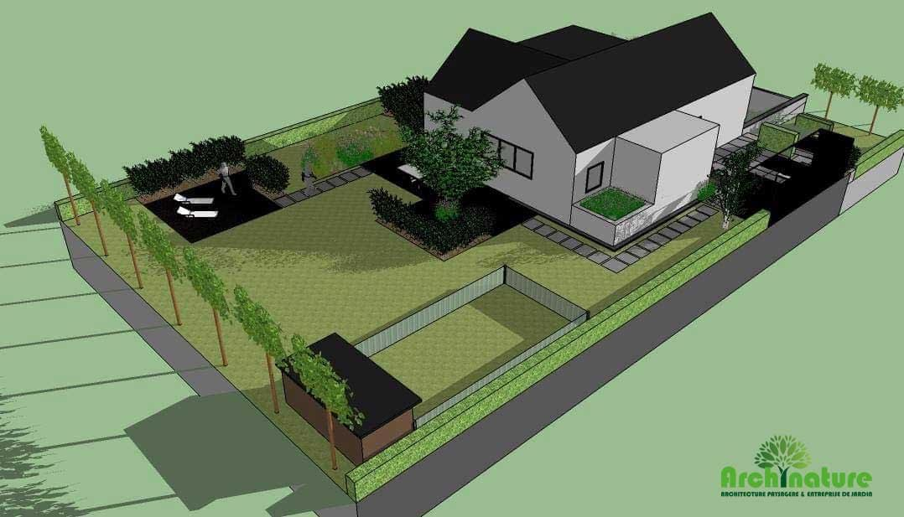
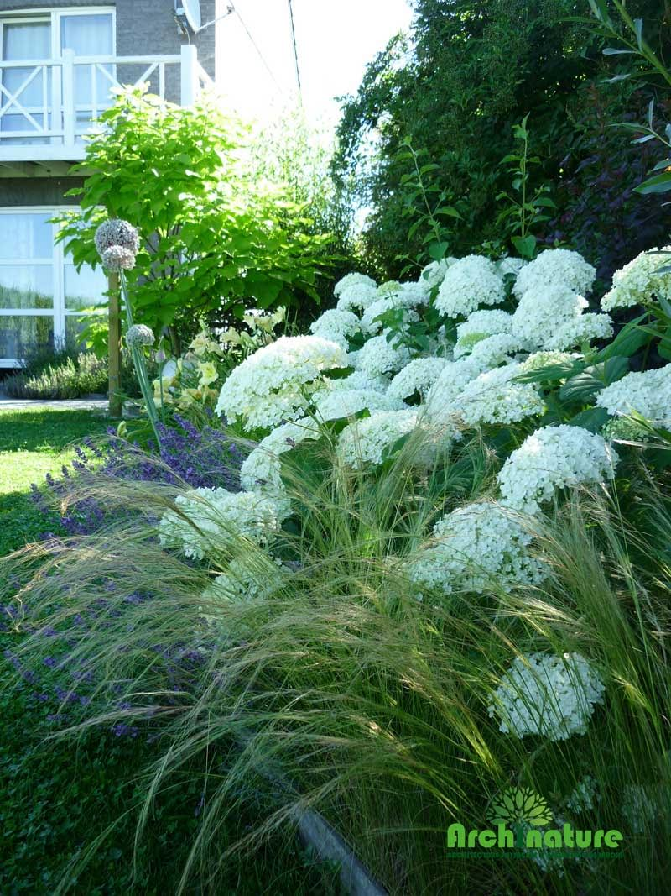
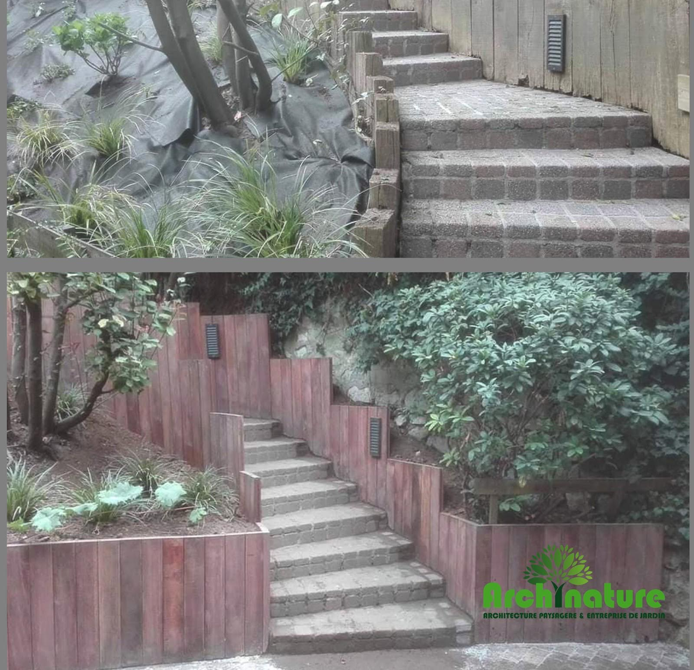
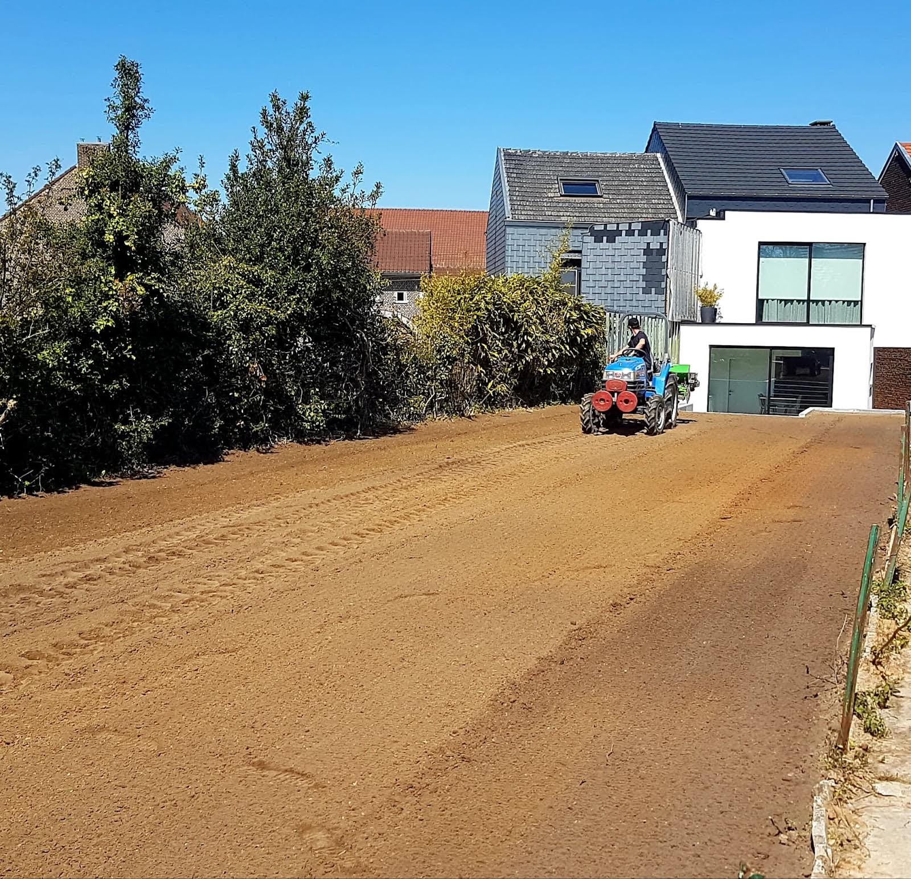
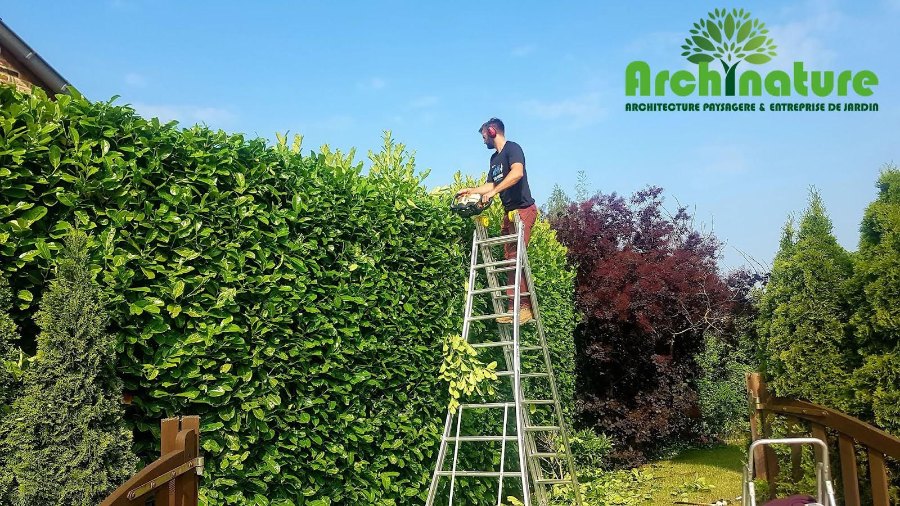

Pl. 01
Conception & plans
Implantation, vue 3D

01 Hortensias 02 Lavande 03 GraminéesArchitecture paysagère & entreprise de jardin
Des jardins dessinés, plantés et entretenus.
Braine-l'AlleudLun–ven · 8h–17h

Implantation, vue 3D

Escalier, soutènement bois

Terre nivelée, avant semis

Laurier, à l'échelle
Et aussi tontes · entretiens · élagage
« Un jardinier qui a su répondre à toutes mes attentes et le plus important : respecte les délais. »
« Rapide, efficace et gentil. »